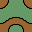
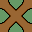
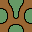
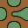
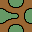
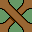
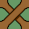

1-side Corner Tiles
1-side corner tiles are derived from Wang corner tilesets, by reducing the number of different corners to one. In a corner tileset, a corner path affects three adjacent tiles. They are similar to Block tiles, but have a design of maze paths. Like Block tiles, they always match adjacent tiles, without the need for Wang tile calculations.
Here is a complete 2-corner Wang tileset.
| 0 | 1 | 2 | 3 | 4 | 5 | 6 | 7 | 8 | 9 | 10 | 11 | 12 | 13 | 14 | 15 |
By adding unconnected dead-end paths to all empty corners with no path, we create a set of 1-side tiles where all sides are the same.
|  | |||||||||||||||
| 0 | 1 | 2 | 3 | 4 | 5 | 6 | 7 | 8 | 9 | 10 | 11 | 12 | 13 | 14 | 15 |
Tile-15 Variations
And here are a few tile-15 variations, which are always single sided.
|  |  |  |  |  |  | |||
| a | b | c | d | e | f | g | h | i |
Stage Array
We can place random tiles in an 18 x 12 array. There is no need to calculate tile index values as all tiles have the same side, and will therefore match automatically.
Stage: 1-side Corner Tiles

Reduced Tilesets
It is interesting to see the effect of using a small number of 1-side tiles.
Note that paths on corner tiles can either join or cross-over at tile corners. The two types of tile design lead to different tilesets to create a balanced maze.
|
See Stage for more random Block tile arrays of 2 and 4 tilesets.
Stage: Random 1-side Braid Tiles